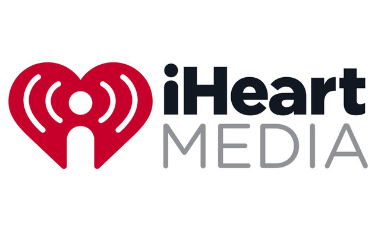
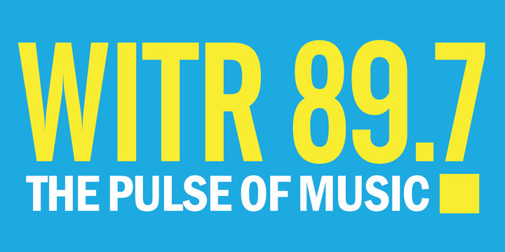

Employment
Producer at iHeartMedia
Apr 2018 - Present
Produced the Carl Falk Show on WHTK 1280, Bob Matthews Show on WHAM 1180 and game broadcasts for the Rochester Red Wings on WHTK 1280. Duties included time management during the show, screening callers for the hosts, and public speaking during frequent on-air broadcasts.
Business Director at WITR 89.7
March 2018 - Present
Created and oversaw the station budget while managing a small department tasked with public facing station branding. Duties included resource management for other departments within the station, budget management for the station as a whole, and directly managed active promotional campaigns.
IT Specialist at Main Line Accounting
October 2012 - Present
I am the on call Network Administrator for Main Line Accounting in Wayne, PA. I set up the original network for their new offices from scratch including group policy, file server management and active directory user management.
Sports Director at WITR 89.7
May 2016 - March 2018
Managed a medium sized department including broadcasters, show hosts and broadcast engineers. Additionally, managed the RIT Tigers Sports Network which was rebroadcasted on multiple stations. Duties included scheduling of broadcasters and engineers for games, planning broadcast content, and facilitating communication between all stations in the RIT Tigers Sports Network.
Instructor at iD Tech Camps
April 2017 - August 2017
I taught groups of up to 8 kids with ages varying from 7 – 17 about game design and development. Additionally, I managed all their final projects over the course of each week and taught them important lessons about project management and scope.